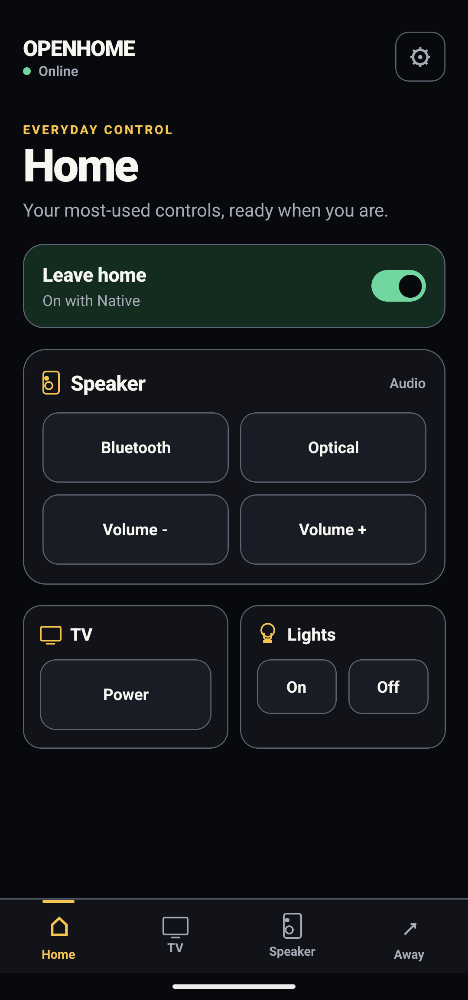
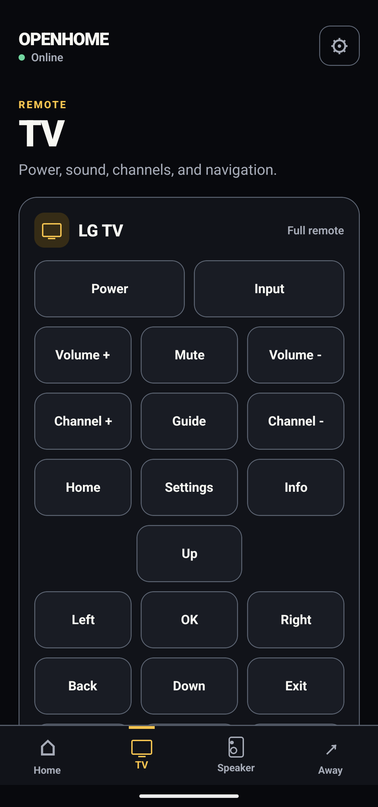
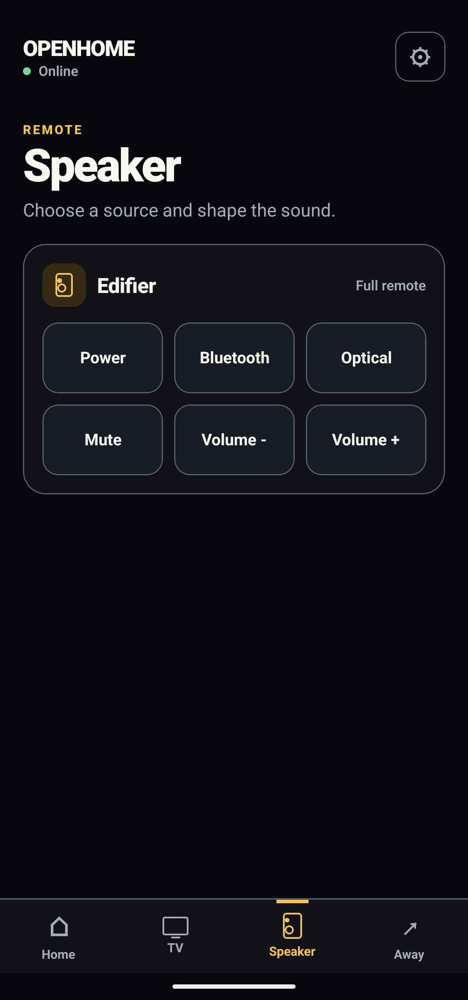
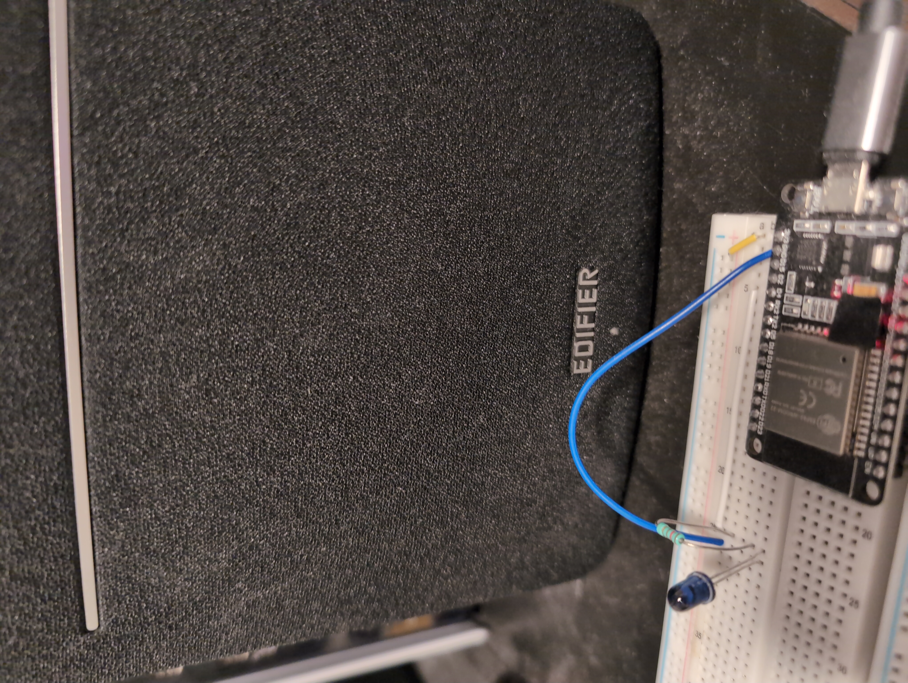
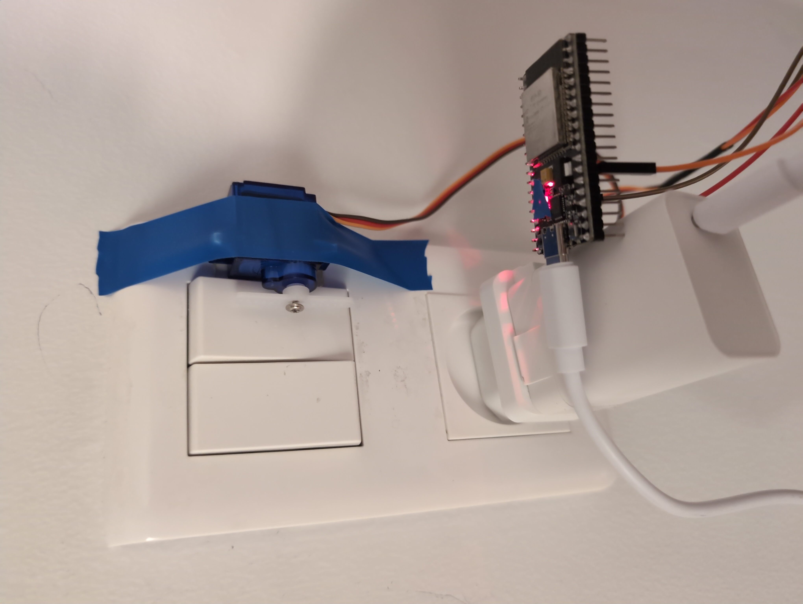
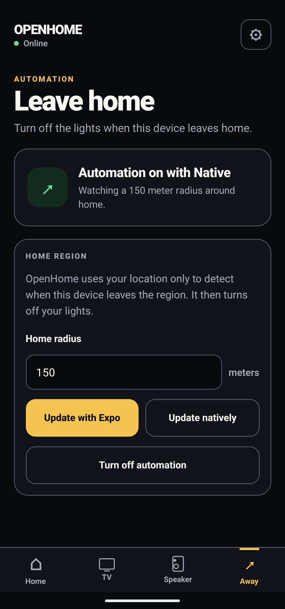

Sender en Bearer-godkendt HTTPS-request.
App-programmering / 2026
Open Home
Fra et tryk på mobilen til en fysisk handling i hjemmet.
HTTPS
01 / CLIENTReact Native + Expo
02 / SERVERRust Axum API
03 / DEVICEESP32
LIGHT · TV · SPEAKER
01 / 08Mobilklienten
Fire kontroller.
Én app.
01Lys, LG TV og Edifier-højttaler
02Swipe mellem de vigtigste funktioner
03API-nøgle gemmes i SecureStore



Fra UI til virkelighed
Tryk.
Request.
Bevægelse.
Appen sender kommandoen. ESP32'en aktiverer servoen og trykker fysisk på kontakten.
09 SEK.
REAL DEVICE
NO SIMULATION
Arkitekturen
Én sikker indgang til hjemmet.
HTTPS
Autentificerer og oversætter kommandoen.
HTTP
Udfører IR-signalet eller servo-bevægelsen.
Mobilen kontakter aldrig en ESP32 direkte. Axum API'et er integrationsgrænsen.
04 / 08To fysiske integrationer
Samme API. Forskellig hardware.



Native mobilfunktion
Geofencing uden konstant GPS-polling.
expo-location
Cross-platform geofencing gennem Expo og operativsystemet.
Kotlin + LocationManager
Android-implementering uden afhængighed af Google Play Services.
Når telefonen forlader hjemmets radius, vækker systemet appen, som beder API'et slukke lyset.
Fra source code
En exit-event bliver til “sluk lyset”.
mobile-expo/src/application/handle-home-geofence-event.ts
if (event.type !== 'exit' ||
event.regionState !== 'outside') {
return success(undefined);
}
const home = await dependencies.loadHome();
if (!home.ok) {
return home;
}
if (home.value === null ||
home.value.identifier !== event.regionIdentifier) {
return success(undefined);
}
const pending = await dependencies.savePending(
home.value.identifier,
);
if (!pending.ok) {
return pending;
}
return retryPendingHomeExit(dependencies);En lille app med rigtige systemgrænser.
Projektet forbinder mobil-UI, sikker netværkskommunikation, baggrundsopgaver og fysisk hardware i ét flow.
TypeScriptTYPECHECKED
Vitest24 TESTS
Fysisk enhedVERIFICERET